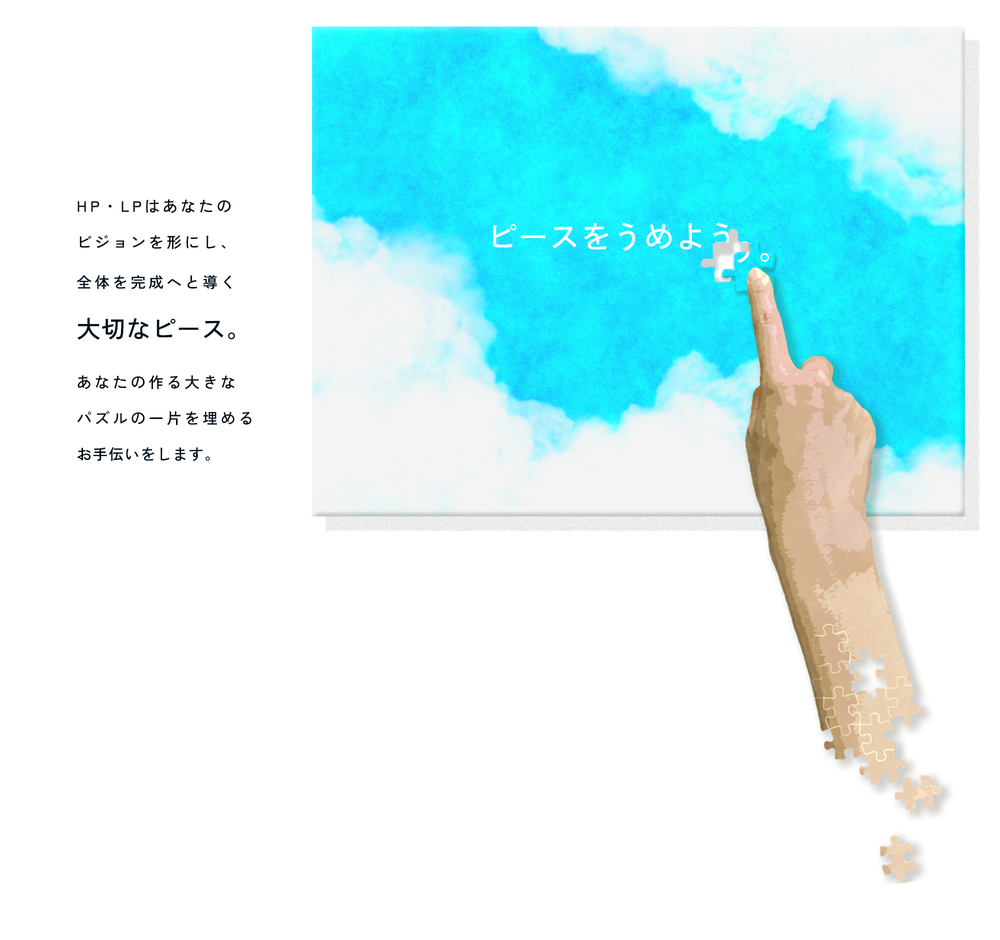

skills
skills
HTML/CSS
デバイスに合わせたレスポンシブ対応が可能です。
JavaScript
お問い合わせフォームや自動スクロールなど動きのあるWebサイトを作ることが可能です。
PHP
WordPress製のサイトをより柔軟に改良します。
WordPress
WordPress製のWebサイトを0から構築することが可能です。
Photoshop
Webサイトに必要不可欠なクリエイティブな画像を作ることが可能です。
Figma
UI/UXに配慮した目を引くデザインカンプを作成します。
about me
about me
yuho nakayama
長崎県在住の2児の母。
2024年よりフリーランスとしてWeb制作を行っております。
LP・HPのデザイン、コーディング、レスポンシブ対応が可能です。
クライアント様に寄り添ったWebサイトを低予算でお作りします。
お気軽にお問合せください。
contact
contact
お問い合わせはメール、またはSNSでお願いします。